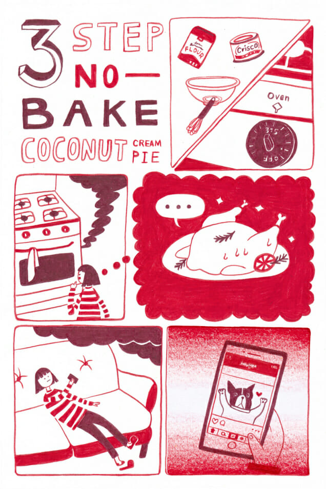

In a medium bowl, whisk flour with good shortening (Crisco preferred). Preheat the oven to 375°. The oven will start smoking because you never cleaned it after making that very complicated and drippy roast for Eric four months ago. Ask yourself why you made engagement chicken on a second date. Consider that all of your failed relationships are no one’s fault but your own, which is no one’s fault but your mother’s. Pore over Eric’s new girlfriend’s dog’s Instagram for two hours. Pass out due to smoke inhalation.
Wake up. It is impossible to tell how long you’ve been out. Your roommate must have turned off the oven. She also left a Post-It note on your door asking you to stop using her Crisco, which is weird, because you’ve only used it, like, 20 times. You are determined to finally make this pie. Preheat the oven to 375°. Google the recipe again. In a large bowl, mix graham cracker crumbs with butter, cinnamon and nutmeg. Alternate adding milk and eggs, plus a pinch of salt. Then, put the beanie Eric left at your apartment on the head of broom and dance with it very slowly to “Your Body is a Wonderland” by John Mayer, which was “your song,” in that you guys heard it once while at a diner and then never talked about it. Consider getting a therapist and watch six hours of Frasier instead. Pass out again due to smoke inhalation.
Wake up with the broom in your arms. Your roommate has taped an eviction notice to your face. Eat two heaping spoonfuls of Crisco out of SPITE. Preheat the oven to 375°. Shred coconut in a trance for hours until your hands bleed. Find Eric’s new girlfriend’s dad’s small business’ phone number online and threaten her dog on 10 to 11 voicemails. Then turn off your phone, because what you’ve done is wrong and you are ashamed. Take a long drive to the seashore. Throw your phone into the ocean, but not before emailing Eric seven times to make sure he knows that, if he wants to contact you, your phone is out of comish and you can be reached via email, Facebook, Twitter DM, LinkedIn, or the US Postal Service. Drive home. Your apartment building has burned down. Remember that you left the oven on again. Hear sirens in the distance and fly to Luxembourg to evade capture. Dye your hair ice blonde, get extensive facial reconstruction surgery, and adopt four baby girls, all of whom you name Eric. Start a dance craze and become an international celebrity. Get invited to a state dinner, where you are served dessert. And voila: no-bake coconut cream pie.